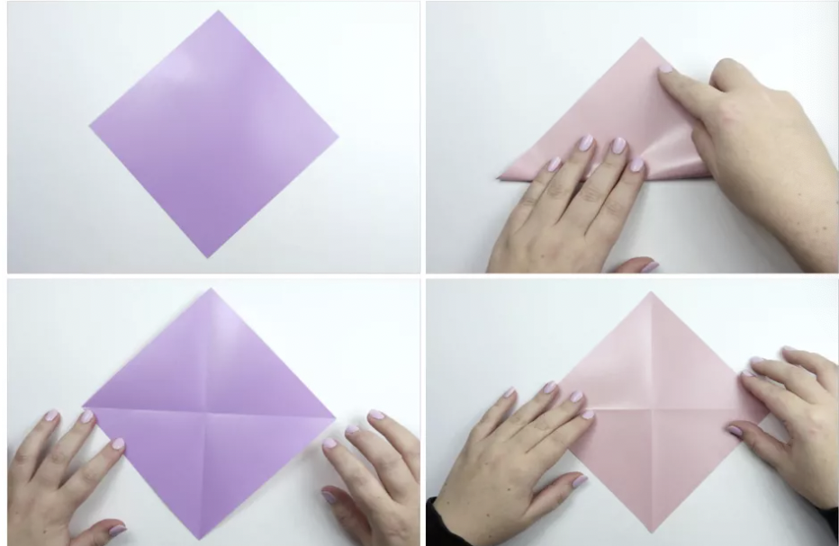
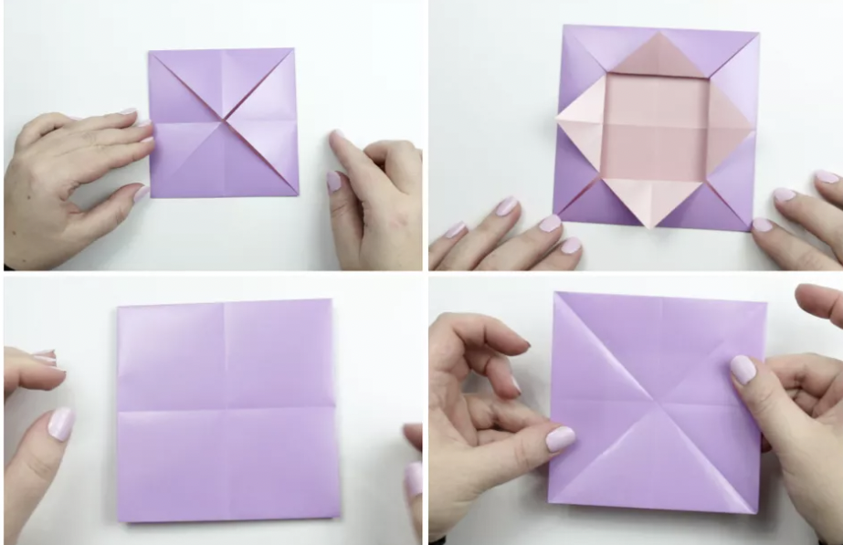
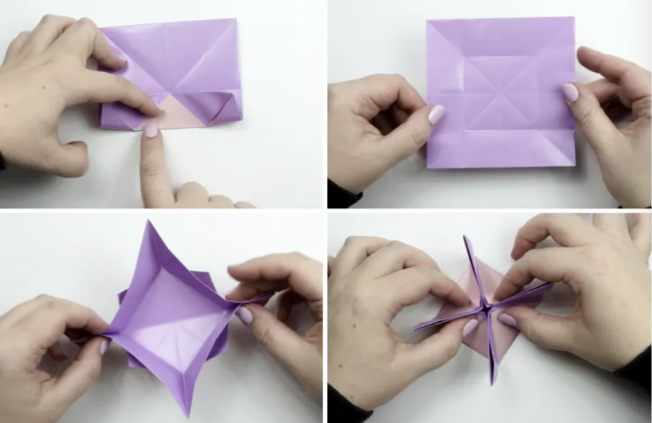
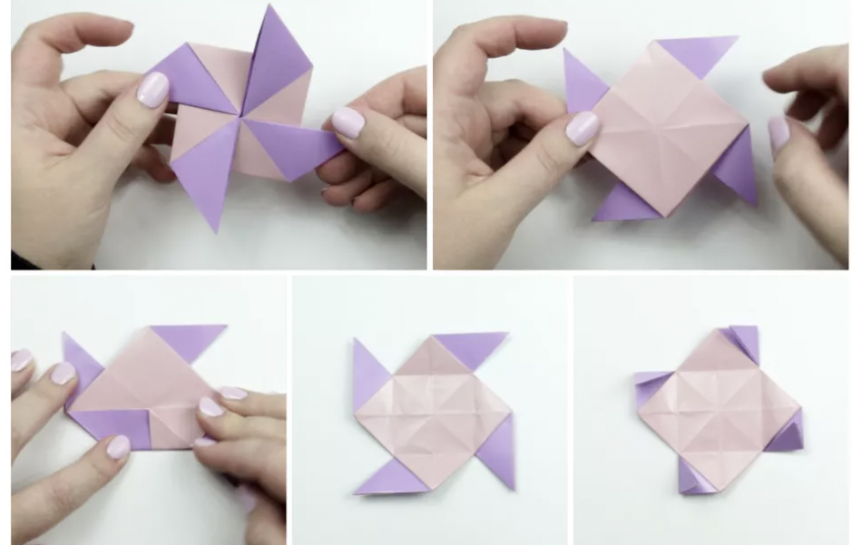
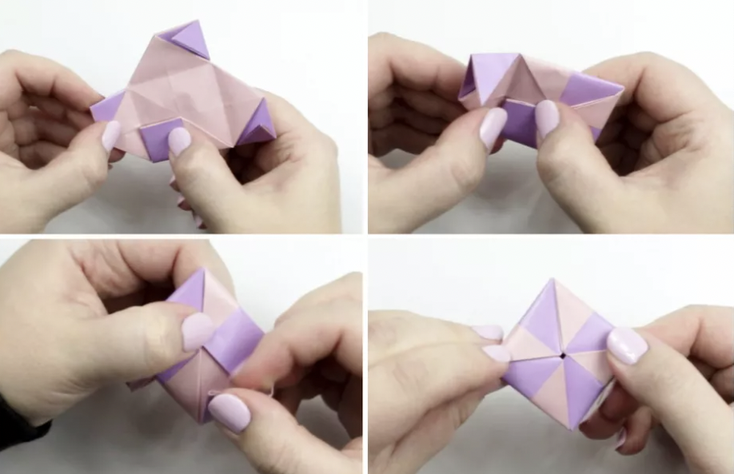
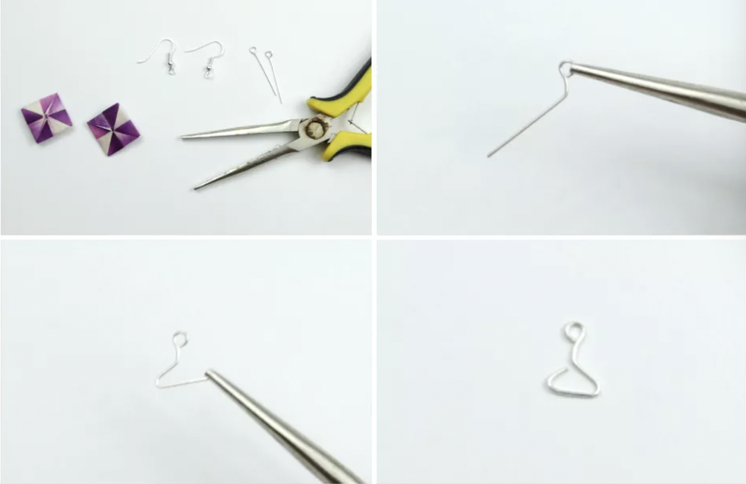

WHAT IS SPECIAL ABOUT THEM?
Make your own set of pretty origami earrings with this easy craft idea. These origami earrings make a unique and inexpensive
gift for a friend or loved one. They are also very lightweight
Make your very own origami geometric earrings by following these simple steps.

1. Fold Paper in Half
# Start with your paper pointed diagonally, so it's the shape of a diamond. Fold your paper in half, taking the bottom corner
up to the top corner and press. Unfold.
# Fold the right corner over to the left corner and crease well. Unfold. You now have a horizontal crease and a vertical crease.
Flip the paper over to the other side.

2. Fold All Corners
# Next, fold all of the corners to the middle and crease well.
# Now fold all of the inner corners outward, aligning with the horizontal and vertical creases.
# Flip the paper over to the other side. Fold the paper in half diagonally, creating a set of creases that form an X.

3. Bring Bottom Edge Up
# Bring the bottom edge up to meet the central crease and fold just the middle section, then open out again.
# Rotate the paper and fold each of the other three sides in the same way—you will now have a square-shaped crease in the middle.
# Pinch all four corners together—the creases are already made.
# Keep pinching the corners and push the edges into the middle and flatten them.

4. Push Corners
# Push the corners, so they become flattened, and arrange them in the shape of a pinwheel.
# Flip the model over to the back. Fold the bottom corner up, aligning it with the central horizontal crease and then unfold.
# Rotate the paper and repeat the last step on the other three sides. Fold the four triangles in half.

5. Fold Corners Into Middle
# Pick up the paper and begin folding the corners into the middle.
# Starting with the lower corner, followed by the left, top and right. You can rotate the paper as you do this
# When you get to the last flap, tuck it underneath the first one.
# Spend some time flattening it out. If you've used thick paper, you might want to pop them inside a heavy book overnight, and they will be
flat in the morning!

6. Bend Eye Pins
# Grab your eye pins and your pliers. Use your pliers to bend the eye pins as shown in the photos. Each eye pin should look like a tiny coat
hanger.
7. Fold Corners Into Middle
# Open out one of the flaps on the back of the origami square. Insert the little 'hanger' and then close the flap again.
# You can use glue to make the earring more secure–especially if the paper is soft. Next, attach the loop to an earring wire or stud of your choice.
my source: The spruce crafts